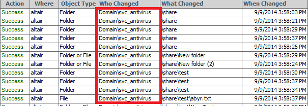

Summary reports from Netwrix Auditor for File Servers may show numerous access events
for service accounts used to run antivirus and backup software.
E.g.:

This happens because file scan operations are considered by Windows auditing as reads and are logged in the Security event log where Netwrix Auditor pulls the data from.
Auditing events generated for such service accounts can be excluded from the data collection by adding them to the omitstoreuserlist_fs.txt file, that can be found in the product installation folder (by default C:Program Files (x86)NetWrixFile Server Change Reporter). The syntax is following: domainusername In order to exclude access events from the "domainsvc_antivirus" account (see the screenshot above), add the following line into the omitstoreuserlist_fs.txt: domainsvc_antiviurs
This happens because file scan operations are considered by Windows auditing as reads and are logged in the Security event log where Netwrix Auditor pulls the data from.
Auditing events generated for such service accounts can be excluded from the data collection by adding them to the omitstoreuserlist_fs.txt file, that can be found in the product installation folder (by default C:Program Files (x86)NetWrixFile Server Change Reporter). The syntax is following: domainusername In order to exclude access events from the "domainsvc_antivirus" account (see the screenshot above), add the following line into the omitstoreuserlist_fs.txt: domainsvc_antiviurs